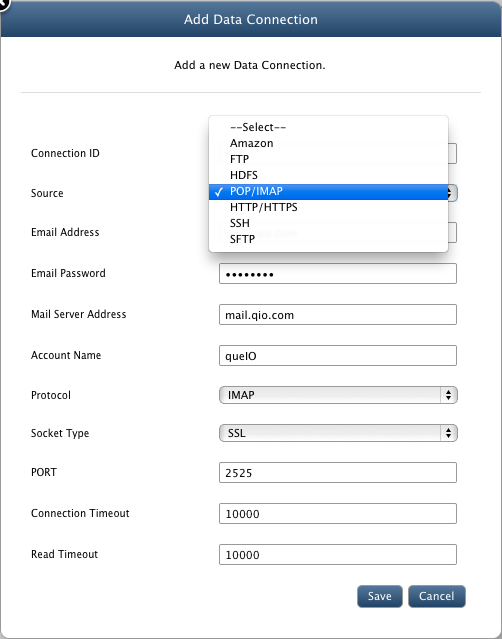
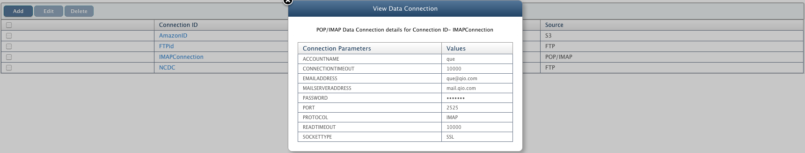

DataSource Connections
In this chapter
This chapter explains how to save connection settings to data stores to directly use them while data import/export operations.
Introduction
QueryIO provides you to save connection settings to different data stores which are frequently used for data import/export operations.
DataSource Connections
Following data stores settings can be saved :
- Amazon
- FTP
- HDFS
- POP / IMAP
- HTTP / HTTPS
- SSH
- SFTP
- Database

Goto Data > Manage Datasources > Manage Datasource Connections and click on Add to define new datasource connection.
- Connection ID : Provide a unique connection id.
- Source : Select the data store.
- Provide configuration settings and click "Save".
- Amazon
- Access Key: Provide access key to connect to amazon S3 cloud store.
- Secret Access Key: Enter secret access key.
- FTP:
- FTP Host: Name or IP of host to connect through FTP.
- FTP Port: Port on which host's FTP service is running.
- Username: Username of the host machine to login.
- Password: Password for the account provided above.
- HDFS:
- Host: HDFS host name.
- Port: Port on which HDFS host service is running.
- UserName: UserName of the HDFS.
- Group: group name.
- POP/IMAP:
- Email Address : Your email account from which emails will be imported
- Email Password : Password for email id provided above.
- Mail Server Address : Address of mail server.
- Account Name : Name of our account.
- Protocol : Protocol to be used : IMAP or POP3
- Socket Type : Use SSL or not.
- PORT : Port to connect to mail server.
- Connection Timeout : Timeout period after which connection will be dropped if there is no response from server.
- Read Timeout : Timeout period, if client can not read from server.
- Using HTTP/HTTPS:
- Base URL: URL from which data will be imported.
- User Name: User name if authentication is required to access files using HTTP/HTTPS.
- Password: Password of the user name provided.
- Using SSH:
- Host: HostName / IP of the machine from which data will be imported.
- Port: Port on which SSH service is working on host machine.
- User Name: User name for authentication.
- Authentication Method: Select from "Password" or "SSH Key"
- Password / SSH Key: Password / SSH of the user name provided.
- Using SFTP:
- SFTP Host: Name or IP of host to connect through SFTP.
- SFTP Port: Port on which host's SFTP service is running.
- UserName: UserName of the host machine to login.
- Password: Password for the account provided above.
- Using Database:
- Database Driver Class: Driver class for the database.
- Database Connection URL: Connection URL required to connect to the database.
- Username: User name for authentication.
- Password: Password of the username provided.
- JDBC Driver Jar: Jar containing JDBC drivers for your database.
- Maximum Connections: Specify maximum number of open connections allowed.
- Maximum Idle Connections: Specify the maximum number of active connections that can remain idle in the pool without extra connections being released.
- Wait Time MilliSeconds: Specify the length of time (in milliseconds) for a database connection to become available.

Copyright © 2015 QueryIO Corporation. All Rights Reserved.
QueryIO, "Big Data Intelligence" and the QueryIO Logo are trademarks
of QueryIO Corporation. Apache, Hadoop and HDFS are trademarks of The Apache Software Foundation.